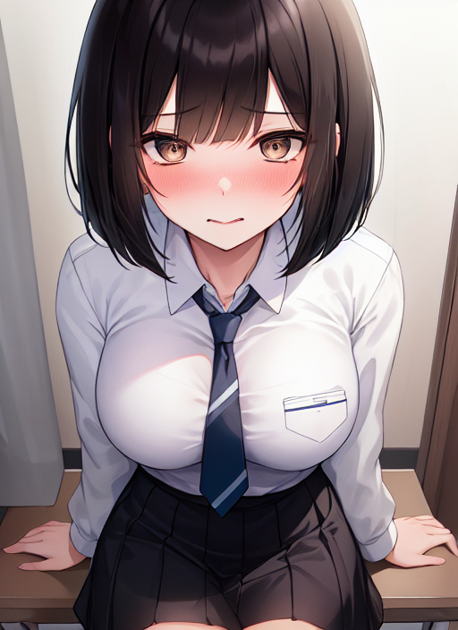

モテたくて
新たな患者が訪れた。
「今日はどうされましたか」
彼は十七歳の高校生だった。暗い性格が災いして、学校でいじめられているとのことだった。近頃は食事も進まないし、うまく眠れないという。
「なんか……みんなが俺の陰口を言っているみたいで……」
少年はどろんとした目で訴えた。
「なるほど」
と私は言った。
「内向的な性格を治した方が良さそうですね」
「でも、先生！ 俺は陰キャかもしれないけど、あいつらみたいな陽キャは大っ嫌いなんです。臭いとかキモイとか、ひどいこと言うし……男子も、女子もです。はあ……学校なんか辞めたい……」
「そうですか、だいぶ悩まれているようですね」
私は慰めるように言った。
「確かに、今から陽気な性格になることは大変です。とても苦労することになりますからね。ですがご安心ください。私があなたを、いわゆる陽キャにして差し上げます」
「ど、どうやって？」
「明るい性格と、朗らかな態度を身に付けましょう。誰にでも陽気に接するし、いつも笑顔を浮かべている。運動もできるから、異性にも同性にもモテる。リーダーシップがあることから、みんなの中心的な存在になるんです」
患者は力なく笑った。
「はは……先生、それって、もう俺じゃないですよ」
「ええ、そうです」
私はうなずいた。
「あなたは今から別の人間になるんです」
「別の……う、うわっ！」
カルテに書いたことが効力を発揮し始めた。 ずんぐりむっくりだった彼の体型は、すらりとした体つきになった。身長は174cmに伸び、腰にはくびれができる。むくんだ顔からは余分な肉が取れ、鼻も整った形になり、唇はぷっくりとみずみずしさを得た。ぼさぼさになっていた長い髪はストレートになり、髪型がボブカットに切りそろえられた。暗い目つきは、目がくりっとしたおかげで明るくなった。胸周りについていた贅肉は、今や形のいい女性の乳房になっていた。サイズのあっていなかった学生服も、女子用の制服に変えてみる。これで見た目は、ボーイッシュで快活な女子高生だった。もちろん内面の人格も変更する。
「え？ 何これ？ 私……ええ！？」
「お似合いですよ。以前のあなたとは大違いです」
と私は言った。
「部活も帰宅部ということでしたので、女子バスケットボール部に所属、としておきました。男女ともに人気が高く、女子の中にはあなたのファンクラブもできている、だとか」
「はぁ？ 私、そんなこと頼んでない！ ふざけんなよ！」
「おっと、変化を口調だけにとどめてしまいました。はい、性格も朗らか、と」
「勝手に……ええと、その……あはは、なんて言おうとしたかな……」
彼女はバツの悪そうな笑みを浮かべた。性格を変更したので、人を口汚くののしれなくなったのだ。
「あのー、できれば、私を元に戻してくれたら、嬉しいかなー、なんて」
私はうなずいた。
「そのお気持ちが大事です。人を全くの他人にすることは可能ですが、それが本当の治療とはとても言えない。常に過去の自分と今の自分を比べて、日々成長することが大切なのです。ですから、カルテにもこう書き加えておきます。……女性の自分にいつまで経っても慣れることができず、男に戻りたいという欲は消えることはない……男のときの人格は残り続ける……」
と私は書いた。 患者の顔が青ざめた。
「そ、そんな……」
「また、今のあなたの人格は、かつてのあなたの人格より優先される、ということも承知しておいてください。それが逆では、内面が変わらないままですので」
「せ、先生。それってけっこう、ひどくないですか？ なんていうか……その……」
「大丈夫です。少なくとも、不眠と食欲不振は改善されるはずです。さらに新たな学校生活もお楽しみいただけるかと思います」
「いやいや、そうじゃなくって！ 私って……元男じゃないですか！ そんなこと急に言われても……ていうか！ もとに戻してくれませんっ？」
「治療はすでに済んでいます。ところで、もう夕方になりますが、ご予定の方は？」
彼女ははっとした。
「いけない！ 部活に行かないと！ ……って、部活なんかやってないのに……でも行かなきゃ！ だって私――」
「女子バスケットボール部のキャプテンですものね」
「そうなんです！ 私、キャプテンだから――って、キャプテンじゃない！ 私は――でも、時間が！」
彼女は慌ててスクールバッグをつかんだ。
「先生っ！ ありがとうございました！ 私、頑張ります！」
「はい。では、お大事に」
彼女はばたばたと診察室を出ていった。 私はカルテを見直した。ふむ、やはり適切な処置だった。これで彼もいじめとは無縁の生活を過ごせるだろう。